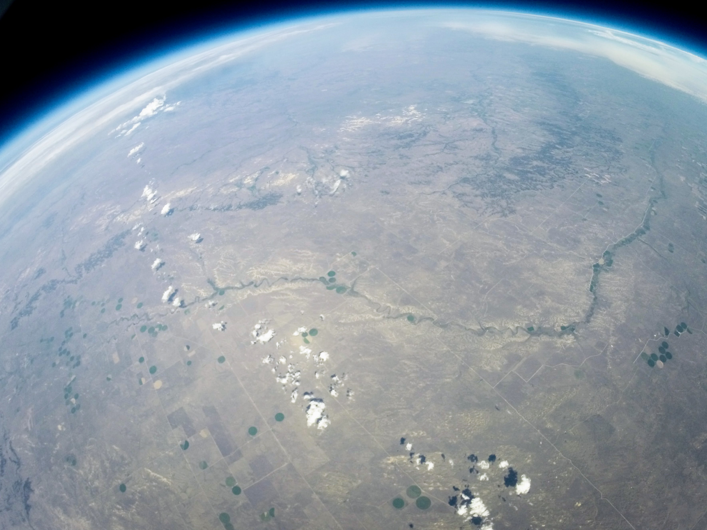
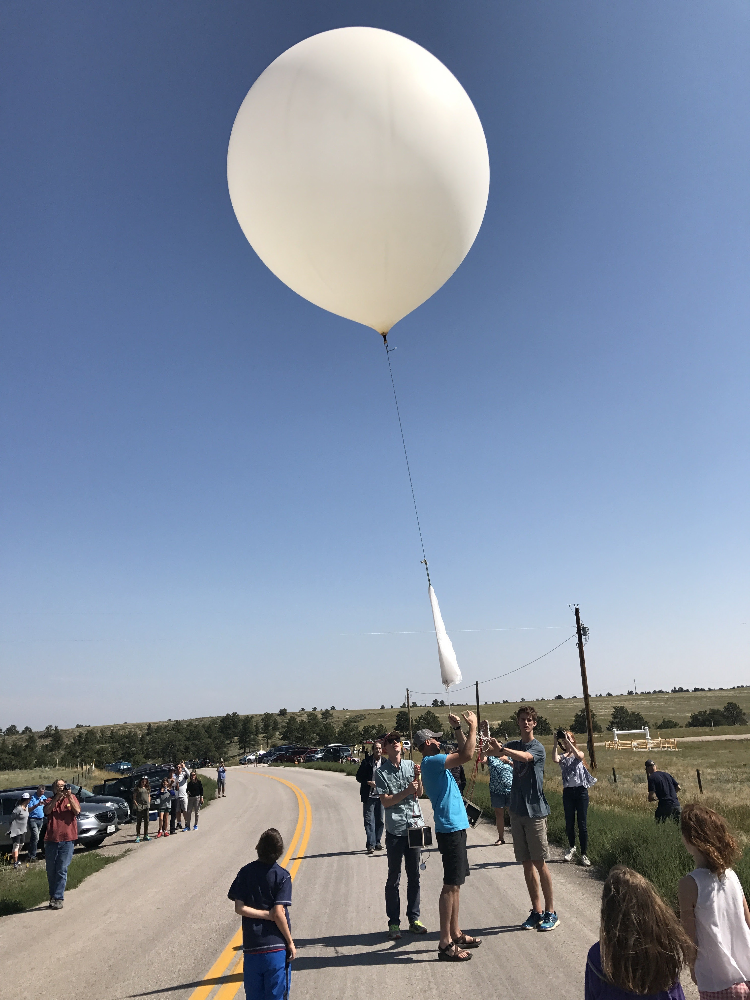
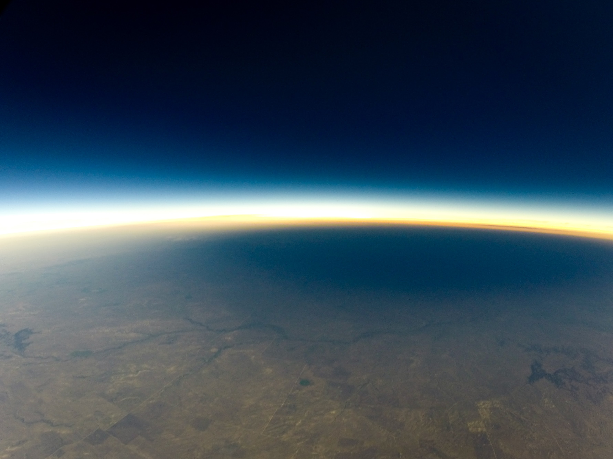
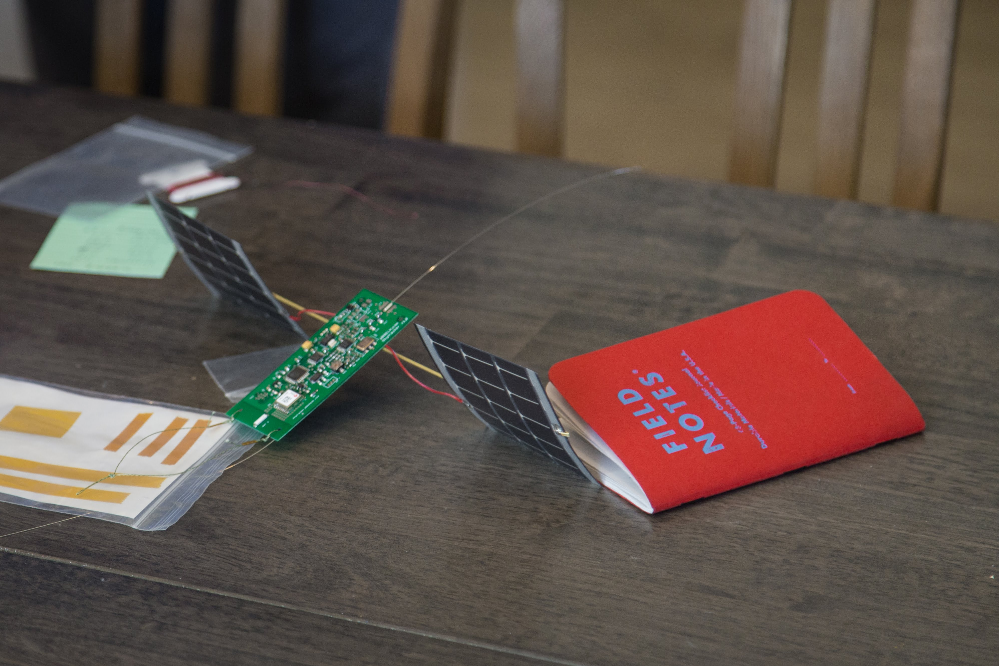
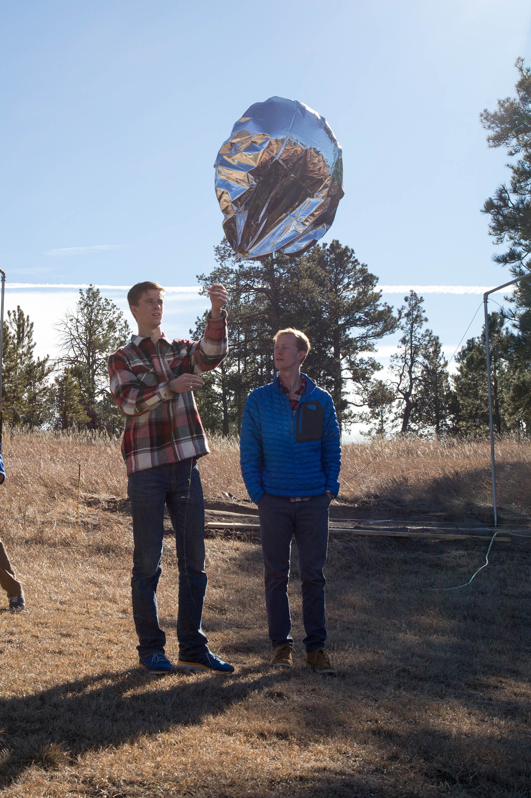

Shepherd's Balloon Launches
{kind=link}
High altitude ballooning
The First Balloon


The first balloon!
The Eclipse Balloon
 {kind=link}
{kind=link}

Watching the shadow of the moon sweep across the earth.
Circumnavigating Balloon
 {kind=link}
{kind=link}

How far can we get a balloon to travel?
The Exporter

The demand for aquarium fish has been steadily on the rise since the expansion of commercial aviation following World War II. The advent of commercial flight made the rapid transport of live fish clear across the globe possible. Today, some
45 nations supply a staggering 2000 species of fish to countries around the world, though they mostly fill aquariums in the United States, Japan and Western Europe. To meet the rising demand for exotic fish, a new profession was born: the ornamental
fish exporter. Meet Conrad Chen, one of the largest ornamental fish exporters in Indonesia, as we explore how the aquarium trade evolves from small-scale fish collection into global big business.
The Supplier

Importers are the first point of contact when fish land in the United States. They get large shipments of reef fish directly from exporters after they make the long overseas flight. With the rise of online shopping, the importer can also be
the wholesaler and retailer all rolled into one, with hobbyists buying directly from them online. However, importers can also supply to smaller retail storeowners across the country, which then fill orders based on customer demand for particular
species. Until recently, there was no way of knowing just how many fish were being imported into the United States, but the Marine Aquarium Biodiversity and Trade Flow online database changed all that. Now we know that more than 10 million individual fish are imported to the US each year.
The Hobbyist

This is the final stop in Dory’s global journey – traveling thousands of miles and changing multiple hands before reaching the aquarium of a hobbyist in scenic Colorado Springs, Colorado. Sitting at 6000 feet in the Southern Rocky Mountains,
Colorado Springs may be the last place that you’d expect to find a blue tang. Meet Chris, an avid saltwater aquarist with a meticulously-maintained 600-gallon tank.
Learn More

Dory’s journey is just one part of a much larger trade. Each year, millions of fish are collected on reefs and embark on a similar global passage. To safeguard both fish and people involved in the marine aquarium trade, learn some key solutions
for keeping aquarium fish more sustainably.